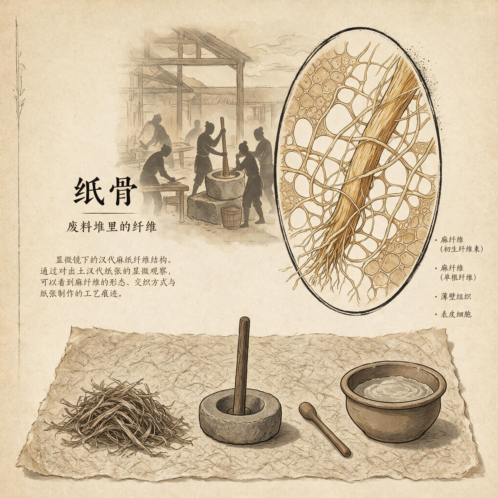

第 7 章
废料堆里的纤维
那股子霉味几乎是从竹简缝里渗出来的。少府考工室月底造册，把各库廪人手里报上来的竹签汇成卷，送尚方。这卷不厚，十九根竹片，串绳已经松了，最末一简缺了一角，露出淡黄的竹肉。封头一行小字

汉代麻纤维显微结构
AI 生成插图，非史实影像。
：积存岁终例销，无用，勿领。朱笔勾过，勾得很轻，收笔处近乎没有痕迹，仿佛执笔人自己也觉得，这些字句不值得用力。蔡伦一手把这卷竹简平在案上，另一手去压住卷曲的简头。指尖触到简面，上面有几道深浅不一的刻痕，大约是旧年受潮后干透起的曲。他看时，天光从织机那个方向斜过来，影子落在简上，像谁用淡灰的布把字盖了一半。
第一行写着：织室月余麻头，若干。后面数字被汗渍洇得发糊，只认得出一个“七”的下梢。第二行：浣衣局破布若干。第三行：厨下旧渔网两束。再往下，是西织残缣数尺，长乐宫冬帐余麻缕一筐，东观褚纸废挫木皮半桶。每条都有朱笔勾。
蔡伦的眼光停住了。他原本只当是月报。尚方接少府案底的积存册，是每逢月底的常例，好让匠作知道库里还有些不算正物的余料。
可是这一回，这卷废物账摊在面前，像揭开一块压了许久的板。底下的东西会动，会冒气，会让人忽然闻到来路。“积存岁终例销”。这几个字在他脑子里慢慢翻转。岁终例销，就是到了年底，名册上的这些东西会报少府，核实后当无主旧物销账。麻头，破布，旧渔网，残缣，木皮。每一样都没有去处。竹简在库房里是“文籍”，缣帛在织室里是“料”，漆是“工材”。唯独这些，在考工室的签上只剩两个字：无用。可无用，是记账的人说的。记账的人并没有把手指伸进麻头纤维里，没有看清旧渔网股绳之间嵌着的那些盐渍，也没有看见树皮经水后会渗出什么。
蔡伦左手仍按着简头。他的右手去案角摸那支竹笔，笔尖朝下，搁久了，墨已经干在锋上。他还是把它拿过来，在左边一块已经磨出凹坑的小青石上蘸了一点水，慢慢把那股干墨和开。墨味很淡。他用笔尖在“麻头”一行旁边轻轻一画。竹皮滑，笔锋过去没有留下重痕，只淡淡地起了一条青灰。他又画了一道，在“破布”旁边。再一道，在“旧渔网”边。
最后，在“树皮”边上，他犹豫了一下，用笔尾的小刀轻轻刮掉一点点竹皮，刻了一个十字形的记号。刀锋入竹的时候，发出很细的一声，像切断一根干草。他没有接着写。外头有匠人走过，足音急促，木屐底磕着廊下的硬地，停了一瞬又往前走。蔡伦抬头，只看见门口一只提漆桶的后影。
他伸手把竹简倒扣过去。背面朝上，简节的牛皮带在案面磨着，发出极低的“吱呀”。他合了一下眼。
少府的正门离尚方坊不过隔两道庑廊，可一个“试”字要经过那里，并不容易。因为每样拨出来的东西，都要写得明白用什么工、复什么帛、费多少日。四十天里，东观函套、皇后屏风、剑鞘范型还在各自案上压着，像几道已经上弦的移机。他没有时间再向少府多请一件正料。
他睁开眼，把倒扣的竹简又翻回来，摊平，就着那一小片天光，再看“无用，勿领”。笔迹之间有一种决绝，像写的人只想赶快结掉这一笔。他忽然觉得，那“勿领”二字，是留给他这个尚方令的。别的官署不会来领，只有尚方会，因为它有匠，有坊，有改作之责。
可若没有这“勿领”，他也不会把目光停在这里。没有人会告诉他。没有一部书会说，废麻可以成薄片。但账上“勿领”栏里最末一个“领”字，却像一道极窄的门。它被朱笔勾去，又还在迹子里。他决计亲自去库房看一眼。这个决定是在掌心按着竹简断头时作出的。缺口扎进肉里，不疼，只像一粒糙米硌着。
他把账卷收进左边袖中，起身，从案后绕出。今早的漆衣还没换，前襟上落有昨晚调漆时溅的几点暗朱色，袖口也沾着松烟粉。他没有理会。出坊前，碰上尚方丞正和一名东观使丞样的人说话，蔡伦只点了下头，沿北庑往库房走去。那方向，他平素不大去。尚方用物，多半由库廪人按单送到坊里，他只需在各簿上押名。如今他亲自去，连坊角两个凿木芯的徒工也抬起头，拿眼送了一程。
库房的门比坊门矮，青石门限磨得发亮。守库老僮正把一串木牌按年度排，见蔡伦来，先是一愣，随后低头翻牌。蔡伦将账卷递过。
老僮用瘦手把竹签一张张核，核到“麻头”名下，才从木牌堆里拣出一片竹片，上面用大字写着“左三厢”，下有小字“存勿领”。他领蔡伦往左首甬道去。甬道不宽，两侧木柱上挂着一盏盏灰陶灯，灯芯是旧的。步子一重，两壁间就荡起土腥气，像是土墙在呼气。左三厢的锁是一把木篦锁，钥匙是一根扁铜条。老僮开了锁，门向内一推。
蔡伦没有马上进去。他站在门外，先看见那堆麻头。它们不是整齐放着的。有些用草绳束着，有几束散在地上，还有几把搭在一口废漆箱上，麻色已经发灰。最上头一层落着细细的尘土，似乎很久没有人动。
蔡伦跨过门槛，脚下踩到几段麻秆，发出“啪”的一声。他弯腰，拾起一小束。那束麻头原是织室裁下来的，还留着经线的弯折，像曾经受过力的骨节。他捏住一端，向两旁一扯。麻头没有断。它先是紧了一紧，随后慢慢滑出更长的须。须上沾着黄灰，但内里仍然是白的。他又拾起一团旧麻团，拆开。层层纤维交叠在一起，有些已经结成了小疙瘩。他用指尖一点点挑，挑出一根单丝，又牵出另一根。
一根大约有半尺长，细，不匀，却怎么也拉不直。拉得稍快，它就会在中间鼓出一小段，像筋络里有气。蔡伦让那根纤维在左掌上停了一会儿，慢慢把两端重叠，用拇指搓。纤维没有糊，也没有脱，只起了更细的绒毛。他把那团麻头重新丢回堆里。灰尘升起一小蓬，在门口的天光中浮起来，又落到他的漆衣上。他不去掸，反而用右手去摸左袖里的账卷。还在。竹简硬硬地，带着那“无用”字样。
他心里浮上一句话，是他在少府各案间听来的：材以稀为贵，工以繁为程。缣帛之贵，不只是蚕丝难得，更在女红之功。竹简之重，不在竹产少，而在每一根都要经过截、削、杀青、刻简、编册。尚方要造器物，从来都先问一句，料从何出，工从何来。这一问若答不上，东西再好也生不出来。而眼下这堆麻头，料已在这里，工也可见。唯一不明的是，它能不能从一团无用的下脚，变成一样能受墨的东西。
蔡伦退后一步，让老僮把左七格打开。破布的气味比麻头更浊。出衣的、擦器皿的、拆帐帷剩下的，颜色驳杂，黄多黑少，有几块还带着黯紫的渍。
蔡伦取一块麻布，展开，薄，几乎透光，经纬已经松动，布面生出小细毛。他用两指捻住一角，慢慢撕。布没有顺劲裂开，先是在裂口拉出许多短苎，然后才一线一线地断。他停下，不撕到底，把半断的那块放回原处。像这样的旧布，织线短，若捣成浆，或许比麻头容易散。
他走了几步，到西廊下旧渔网那里。渔网被盐浸过，又被水泡过，绳股粗硬，手指顺上去，有一点刮。他掐住一根网绳，用力一弯，绳股间先开裂，露出里面一些较白的纤维。干了的盐粒簌簌落下来。他松开手，看那些被拉出来的细毛贴在绳束上，像一层灰白的苔。
树皮是最后一个看的。库门边几只竹筐里装着东园送来的木皮，有些还带青皮，有些已经干卷，边缘翘起，像一只只冻僵的耳廓。蔡伦抽出一条，试纵向撕。树皮不顺着断，而是从外层与内层之间分开，露出一层淡褐色的内瓤。他又试横向折，折口不齐，纤维像细木丝一样岔出来。他站直身子，把那条树皮卷起，慢慢用力，树皮没有立刻断，而是一层一层地剥。剥到最后，里皮才裂。
他把剥下来的内瓤攥在手里。光滑，微凉，像某种未被使用过的筋骨。他回坊时，暮色已经落在尚方坊的木屋顶上。工匠们收了工，空气里还浮着热胶与生漆混成的味道。
蔡伦没去前坊，直接拐进东角那间杂料室。这间屋低矮，只有一扇小窗，窗板平时关着。他推门进去，用火石点起一盏灯。灯油不净，焰头摇，冒了一点黑烟。他先在地上铺开一张旧竹席，坐下，再把袖中账卷取出，就着灯光平放膝上。十九根竹片，隔成十九行。每一行都有一样东西，一个数字，一个朱勾。麻头若干。破布若干。旧渔网两束。残缣数尺。木皮半桶。
这些“若干”和“两束”“数尺”加在一起，也就是半间库房的下脚。尚方若是不用，它们到岁终就要销去。销去就是当旧物焚弃，或分给杂役充作薪草。没有别的路。他合上账卷，曲起右手，用指节敲了敲膝盖。
不能以竹帛为起点。过去多少试验，都从“可书之材”开始，拿缣帛比竹简，竹简比木牍，再问哪一个能同时解决轻与贵。可尚方的物料账本里，从来没有一行说谁在为“可书之材”发愁。
缣帛的账从织室出，竹简的账从东观来，都有主，都有价，都在“领”“剥”“调”里过得明明白白。只有“无用，勿领”是一堆无主之物，从各家门里被扫出来，攒在尚方库中，月月记一笔，年年销一次。若书写的新材可以从这堆无主之物里长出来，它就不必再与竹帛比高低。它有另一条来路。这来路不在皇帝的书案，不在博士的经简里，而在每一座织室、每一处浣衣局、每一张旧网、每一块剥下的树皮中。
这个念头一起，他反而不敢立刻声张。尚方令要试新材，自然可以。但“新材”二字一旦从口中落出去，就可能变成别人攻击尚方的刀。中黄门会问，尚方不务正役，偏去弄无用之物，成与不成，都可治罪；士大夫会笑，一介宦者不知经术，拿烂麻破布充什么新材。连少府问起来，也要一个“已有”的根由。他不能只靠一句“可试”。他得先让“试”变成一条可以入册的规矩。
得有一份呈文。这呈文不能写“此物可代竹帛”，只能写“积存无用料，岁终例销，拟权作尚方改料之试，以省正帛”。理由不是理想，而是节省。
他把铜灯往前提了提，在竹简上摊开一块窄木牍。笔上墨已研开，他写：积存无用料，岁终例销，拟权作尚方改料之试，以省正帛。写完，停了一下。他没有写哪一种无用料成哪一种新料。这层先不点破。他只在“改料”二字下加重了一笔。木牍吃墨深，那一笔下去，字的脚步站得稳。
随后他取过废料账，夹在右腋下，带门出去。外头的风比傍晚更凉，院中木架上几领未下的纱帐被吹得鼓起来，又瘪下去。他快步穿过前坊，往少府署去。
少府主事还没散。堂中烛火高照，案上堆着各库送来的签册。那人正用朱笔点一本布帛帐，见蔡伦进来，有些意外。蔡伦也不坐，把呈文和废料账一起呈上。主事展开，先看“节省”二字，再看废料账上蔡伦点过的几行。那些东西本来就等着销，拨给尚方做改料之试，不损正额，不增新支。这样的事，批起来不必多问。主事提笔在呈文下写了“可”，又依样画了一个小小的押。他没有问“改什么料”。蔡伦也不说。
谢过，拿了批复退出去。他听见身后主事把账册翻过一页，像把这一笔揭了过去。
他知道，从这一刻起，那堆废物有了一个合法的身份：试材。身份虽小，却可入册。入册，是尚方令的第一步。
回到东角杂料室，他开始动手。这活儿很笨。取些麻头来，先扯松，再去绳梗，放在一个木盆里浇水。水是井里现提的，清而不湍。麻头浮起来，不断，不沉，像一团团灰白的水草。他拿一根旧木杵，在木桶里慢慢捣。一开始，麻头只是滑动。捣急了，水花溅出来，溅在他的麻衣前摆上。他放慢，一上一下，捣下去时先觉得一股阻力从杵底升起来，像纤维在推他的手。再捣，阻力慢慢小下去，杵底触到木桶底，发出闷响。他停住。
水已经浑了。探手进去，捞起一小把。麻头已经散成许多细小的茬，像剪断的毛发，匀而短。他攥干，放在竹席上摊开，用一块薄木板压水。水渗下去，席上留下一层淡灰的膜。
等不得干，他便用手指去揭。揭不起来。膜太薄，黏在席上，一碰就裂。他把裂片仍放回水中，再捣。捣到水更浊，再摊，再压。三回之后，那层膜稍厚了，可一揭还是碎成几瓣。
他索性把那几瓣拼在一起，用手掌按平，等它慢慢阴干。到第二天早晨，那几瓣成了一块硬脆的薄片，边角卷起，中间有细密的纹路。不能折，一折就断。手指轻捻，碎成小片。
可他却看出一点来：这些碎片的断口都是毛的，有许多短纤维交错。正因毛，它们才能重新互相咬住，在湿时连成一片。若是断口光而齐，反倒不能。这正是麻头与缣帛不同的地方。缣帛是整线交织成的，裁断了，经线纬线像一道道光滑的边。麻头不是。麻头本身已断。断口之毛，便是它们再次相连的唯一凭借。他把那些碎片收起来，不扔。
又搬来几束破布。破布比麻头难理。布上粘着旧垢，颜色杂，有的地方朽了，一扯一个洞。他把布剪成小块，泡水。水很快发了黄。他伸手进去搓，旧布像烂絮一样散开。捣不多时，桶里已经成了半浆。破布的纤维比麻头短，捣烂后像一层薄粥，铺在席上，干得快。干后倒比麻头的试片软，可太脆，指甲一按，就是一个小坑，再按，裂了。他皱着眉，又取来旧渔网。渔网难入水，要先拆。
那网绳是几股麻丝绞成的，用刀割下去，绳子不立刻断，往往拉出更长的毛。拆了小半天，才得一小盆断绳。捣时，这断绳在杵下打滚，不像麻头那样容易吸湿。他加了几回水，捣到手臂发酸，那些粗绳股仍是半硬。他停下，坐着出神。木杵靠在桶边，杵头上挂着一缕绳筋。灯焰被桶中水汽冲得直晃，把那缕绳筋的影子照在墙上，像个未解的结。
他忽然意识到，废料不是一种料。麻头柔韧，破布短脆，渔网粗倔。它们各是一路。若想直接合捣，必是一锅乱絮。若要成片，须先分其性，再合其用。分不是区分贵贱，而是区分长短软硬，让它们彼此补足。他需要的不是许多次失败，而是一个次序。这个次序，要从“无用”里理出“可用”。但他来不及把次序完全理清。
第二天正午，一个东园工匠来还前时借去的旧竹片。蔡伦让尚方丞领他去库房取。两人经过东角杂料室时，门没有关严。那匠人走在后头，往门缝里扫了一眼。地上竹席上摊着几块灰白薄片，旁边木桶里泡着一团湿麻。他走了几步，忽然问尚方丞：那位令君又在做什么？
尚方丞没有答。只催他快走。等把人送走，尚方丞又折回坊中，对蔡伦说，东园有人在问，尚方是不是拿废麻调漆灰。蔡伦正在看一张剑鞘的铜范，听罢头也没抬，只说，是。尚方丞站了一会儿。他没有再问，退了出去。蔡伦等他走远，才慢慢将铜范放到一边。
他明白，事情已经出了门，虽然还只是“调漆灰”的说法。可说法会变。再传几日，也许就变成“尚方令不多正物，和一室烂麻泡在一起”。中黄门的人耳朵长。邓氏的人也不会放过。午后，他把那堆半干的薄片归到一个木箱里，把竹席卷起，木桶推到墙角。又拿一块旧葛布盖住木箱，自己搬去后边小廊。小廊外有一道窄天井，正对少府库房的后墙。
他站着，风吹着瓦，瓦上几茎枯草摇。他望了一会儿，忽然看见库房那排窗眼里，有人影一闪。近看又没了。他不动，退后半步，让身子没进廊影。是库房老僮来收簷下的灯油，还是另有其人，他说不准。只是从这一刻起，他知道不能在东角杂料室里大动场面。于是又折回，把一应捣具搬得更深，搬进库房边上一间更小的废器室。
那里没有窗，只在门上有一道窄缝，平日放废模子和断尺。他把东西塞进去，只留下几块最好的薄片，仍旧放在案头，上头压一块木板。有人来，见也只当是漆灰试样。他不想在秋分之前再惹出什么事。可越不想，心里越紧。皇后屏风还差三扇绷绢，东观函套的漆灰还未全干，剑鞘铜范有细碎气孔，要补好几回。
七尺之台，一丈之柱，都不肯等人。偏这时，废麻成片的事又不肯走快。他白天在前坊监工，夜里才钻进那间黑暗的小室，用半桶剩水、一根杵，继续捣磨。灯油花得很快。点两个时辰，灯芯就要拨一拨。他拿拨灯用的小铜钩去挑，一挑，光先弱后强，把桶沿上粘的纤维照得像一圈短雪。有一晚，他试到鸡鸣时分。
木杵在手里已经拿不稳，肩臂酸痛得厉害。桶中麻浆发出一种轻响，像湿纸从墙上揭下来。他俯身去看。水面静下来，浮着许多极细的白点。他取一瓢清水，慢慢把这层浆水搅散，再倒在一块细密的粗麻布上，让水渗下。等水沥干，粗麻布上剩下一层浆面。他取下粗麻布，平铺在木板上，用一块石条压住。
石条两头并不平整，他只能压中间。浆面慢慢失水，和粗麻布之间结了一层界限。天快亮时，他试着把粗麻布翻过来，让浆面朝下，再慢慢揭布。布与浆面相接的地方，已经干得微粘，一揭，发出极细的“咝”声。像是一层极薄的皮不愿意离开。他屏住气，把布一点点掀起。
最后，粗麻布离了手。木板上剩下一层灰白色的薄片。中间厚，边上薄，还印着布纹。可是它连成一整张，没有破。他拿起来，对着门缝漏进的光一照。纤维像许多细小的江河，交错、纠缠、分股、再合。他把薄片翻过来，手一松，它轻轻落在案上，没有断。蔡伦站着不动，只觉得手里的潮气正在退。
他把薄片铺好，用一块木板压住。心里有一个声音在说，这还太粗，还不匀，还太薄，还不能用。可有另一个声音，像从很远的水里浮上来：成了。不是“纸”成了，不是那种将来可以写经传世的纸成了。是一条路，从废麻，到纤维，到浆水，再到薄片，被证明是可以走的。这条路不通向竹简。不通向缣帛。它通向另一个方向。这方向没有名字。
也许永远不会有人给它一个像样的名字。可它已经在这里，在这间黑屋子里，被一个只有一盏小灯的宦官，从一堆即将销账的废物中摸索出来。他坐下，背靠着冰凉的门板。他用双手按住膝盖，掌心的潮气慢慢冷下去。面前木板上那张薄片，边缘有半寸多的地方薄得透光，中央还夹着几根没捣开的麻棍。它不漂亮。可蔡伦知道自己不会丢弃它，也不会藏起来。
他得把它留在看得见的地方。因为明日还要到前坊去，还要向少府报东观函套的工期。他得从这间黑屋子里走出去，重新当他的尚方令，把一身浆水洗掉，把“试材”二字压在心底。可心境已经变了。在回住室的路上，天刚刚发青。尚方坊的房脊在微光里显出一道道直棱。他踩过夜露未干的碎木屑，鞋底发出沙沙的响。
他忽然想，尚方令这个位置，能看见的东西果然与别处不同。别人看少府废账，看见的是一笔要销的负担。他看少府废账，看见的是一行“勿领”里被浪费的纤维。不是他智巧过人，是他每天都要从这堆无用的东西面前经过，却没有人催促他去想它们能变成什么。
只有局势逼他。只有空坊催他。只有那前头还未交出的屏风、函套和剑鞘，在逼他快一点。他快不起来，却被迫往角落里去找路。那堆废料，就这样成了他的路。这个“位置”给他的，不是别人所没有的知识，而是一双眼睛。眼中有账。账中有无用之物。无用之物中有筋骨。这筋骨，若不及时看取，便会在岁终例销的火里一把烧掉，化成灰，或者当薪草送进灶下，连一点书写的机会也无。他也就和它们一样，先在这一点点被看见的间隙里，活下来。可蔡伦也知道，这个“被看见”，并不能算作安全。
因为他已经动了。库房的门开了。木杵动了。薄片成了。这些事都发生在光下和眼侧。废料好取，耳目难防。他真正要做的，不是把这张片递到御前，而是把这条路走通，让它在尚方的正役里占住位子，使“试材”二字像“正料”一样稳当。否则今天拨来的废料，明日仍会销去；今天成的片，明日还会碎掉。他回到住室，没有点灯。外头的天已经转白。案上还摊着那本少府交来的废料账。他看了一眼，把它卷起，放进一个旧漆匣里。
匣底垫着一层干草，草上还印着原先放砝码的痕迹。他盖上盖，听见木头与木头碰出极轻的“啪”。然后他洗了手，换下一身浆渍的外衣，把几块不成形的薄片放在枕边。他到前坊去。秋分，还有不多日子。东观那边已经来催过一次函套的封漆。蔡伦走到漆案前，手背试了试一架未干漆面。漆还软。
他心里忽然跳出那张薄片。如果纸也能像漆一样，经这一道上物之工，由湿到干，由软到硬，由散到固。如果它能经住这一关，才撑得起更长的路。可它现在，连“入模”前的“范”都还没有。得先解开旧渔网最顽固的结。得先想透：石臼与铁砧究竟有什么相通之处。
他正出神，前坊大门被推开了。一个中黄门的人站在门口，手里提着一只未点的小灯，像刚从值司里出来。他说，奉中黄门令，问尚方数日前所借东园竹片，何时入还簿。蔡伦看了那人一眼。天光从门外涌进来，把那人脚前照得雪白。他声音不高，说：已归还，昨日即令入簿。那人半侧着身子，朝工坊里扫了一圈，目光在靠墙一只盖布上停了一瞬。然后他笑了笑，退出去。
门重新合上。蔡伦站在原地，听着那脚步不紧不慢地沿庑廊远去。坊里又恢复了凿木和刮灰的声音。他弯下腰，把面前一柄磨了一半的剑鞘范型翻了过来。铁模沉重，像一只闭着的口。他把手指贴在模底的流口处，那里已经锈出细小的红点。还不够热。还不够纯。还不能浇。他直起身，走到东角杂料室前，把门推开。
光进去，照在空荡荡的竹席上。他忽然觉得心口发凉。他昨晚明明把几样东西留在地上，今早却已收走。是谁收的？还是自己记错了？他不敢立时去查看。先退出去，叫来尚方丞，说，秋分前还要去库房领些旧布补函套内衬，请把上月废账一并取来。尚方丞应了。蔡伦跟着他往库房去。库房老僮正蹲在门口晒木牌，见他们来，慢吞吞起身。
蔡伦没有动。他在等。等那些木牌在太阳下翻过来，把“勿领”二字照得发亮。那是他要走进去的地方。也是所有窥探目色都还看不起的地方。他要走进去，走到那堆无名无用的纤维中间，继续把“试”字做下去。不是因为他早知道那里有纸，而是因为他已经别无更多正料可耗。
而越是无奈，越像命。那命不是天给。那是位置给的。他站在这位置上，就没有别的路。那老僮终于翻开废料签牌，问：令君，先看哪一厢？蔡伦说，都看。从麻头看起。声音落下去，像一颗小石滚进深库。库房的门开了。土腥气与陈年纤维的气味一同涌出。他跨进去。外头的太阳正盛，却只能替他找到门口一尺。再往里，就得靠他一步步去摸。他袖中那卷账，仍硬硬地硌着。他知道，从这堆废物出发，前面只有更多的黑暗，更多的捣磨，更多的扑空。但至少这一回，他不再按竹帛的老路去问天下最贵的是什么。他问的是，什么最贱。最贱，最容易得，最没有人要。他进了那扇门。